47都道府県 · 国内旅行コンシェルジュ
旅する日本図鑑
まだ知らない日本に、会いに行こう。
温泉、絶景、食べ歩き、歴史ある町並み。
47都道府県の旅の魅力を、地域と写真から探せます。
広島 · 宮島
47都道府県 · 国内旅行コンシェルジュ
まだ知らない日本に、会いに行こう。
温泉、絶景、食べ歩き、歴史ある町並み。
47都道府県の旅の魅力を、地域と写真から探せます。
💬 こんな質問をしてみてください
キーワードで絞り込むか、地域から都道府県を選んで旅先を見つけてください。
写真で見る、日本の絶景・観光地 18選。気になる県をクリックして詳細を確認。
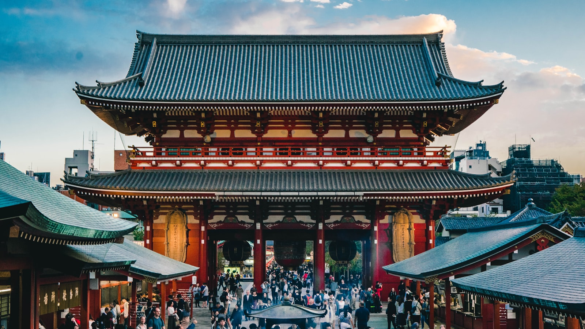
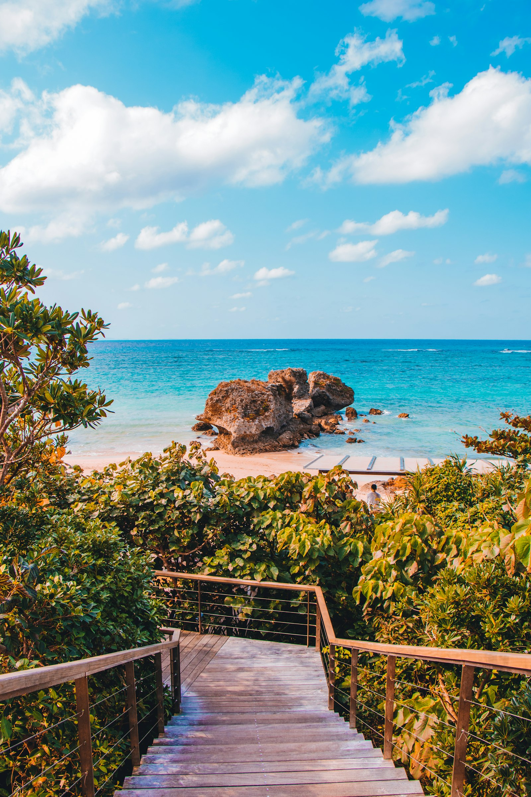
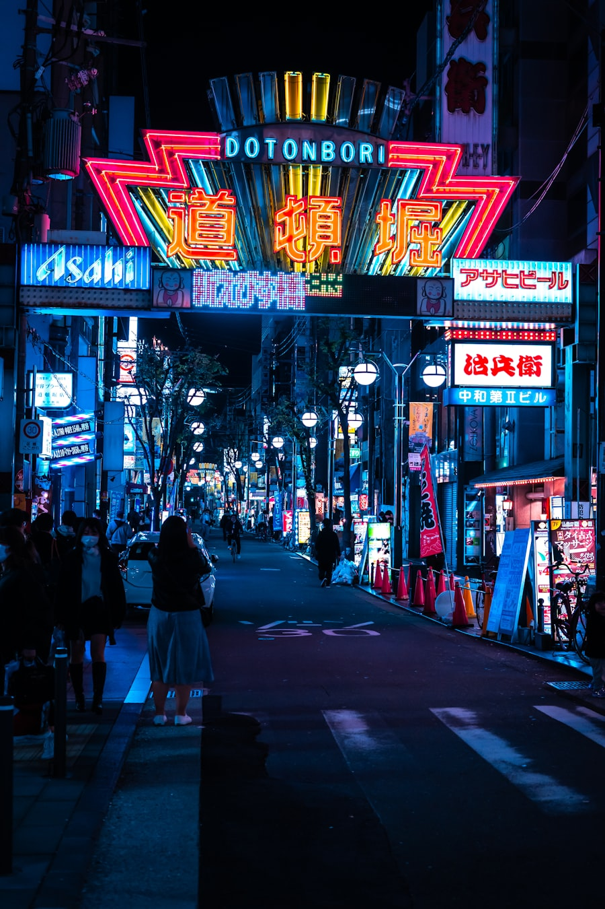
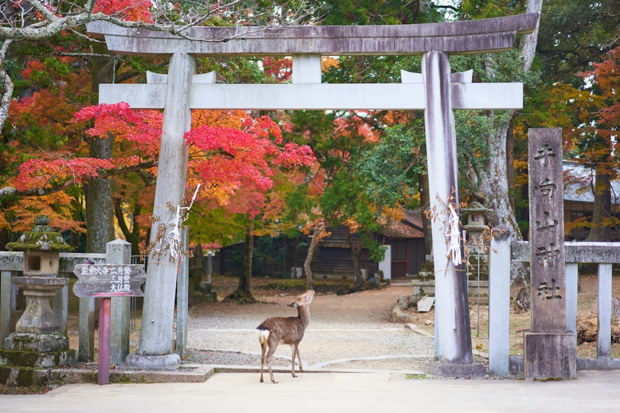
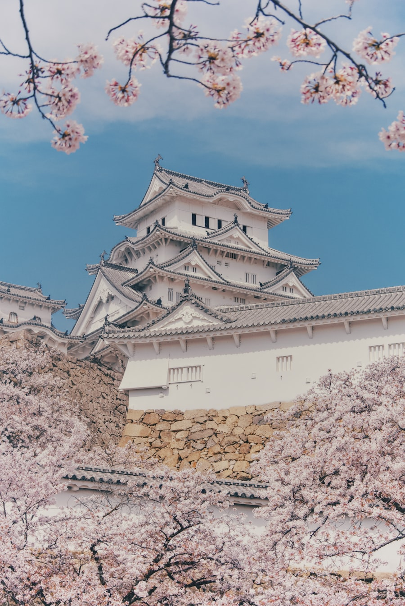
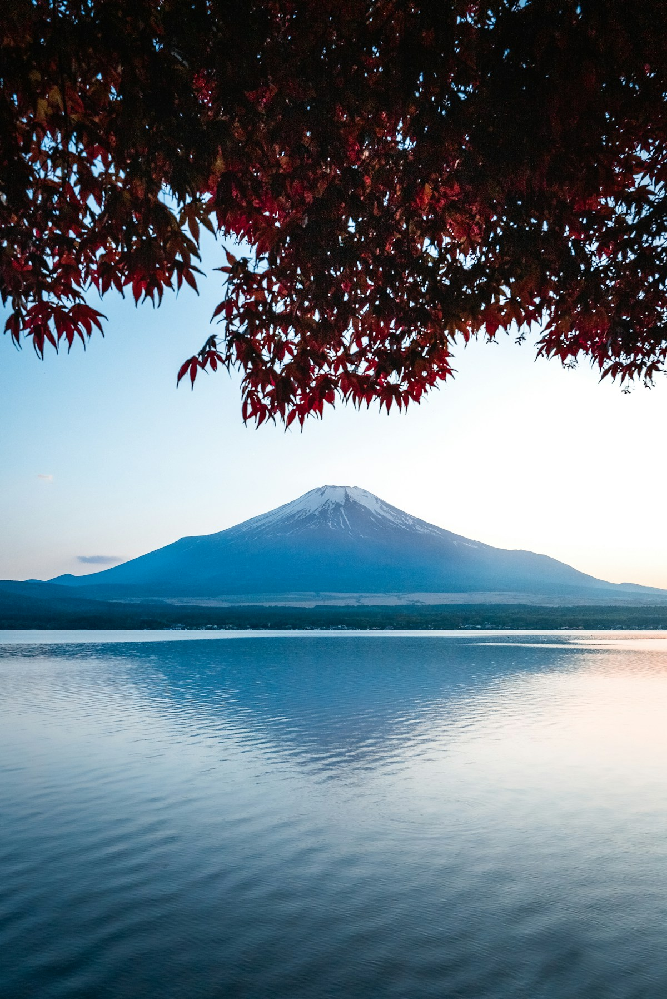
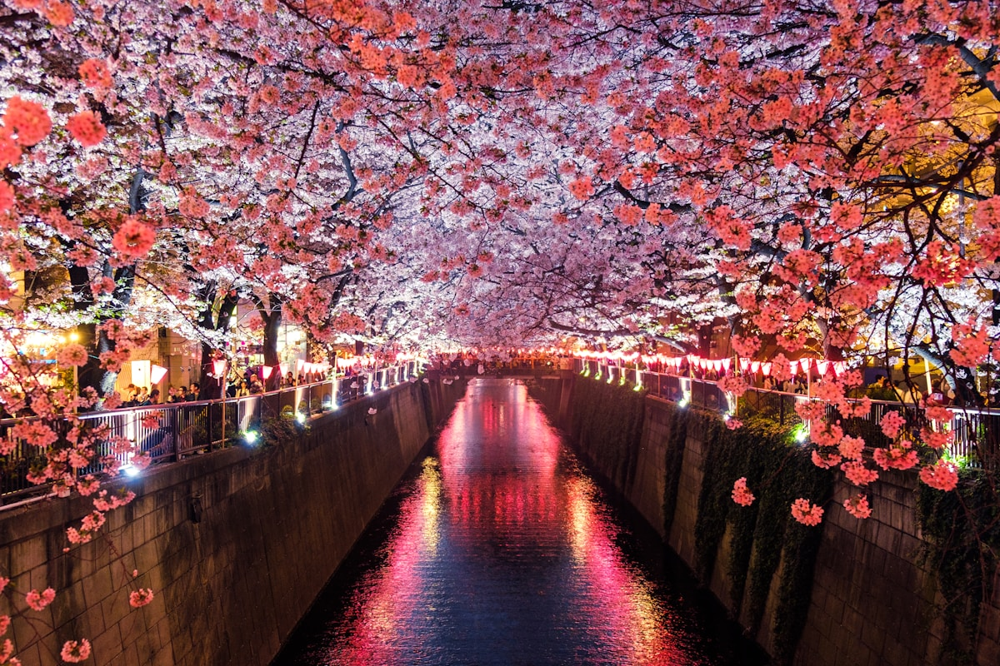
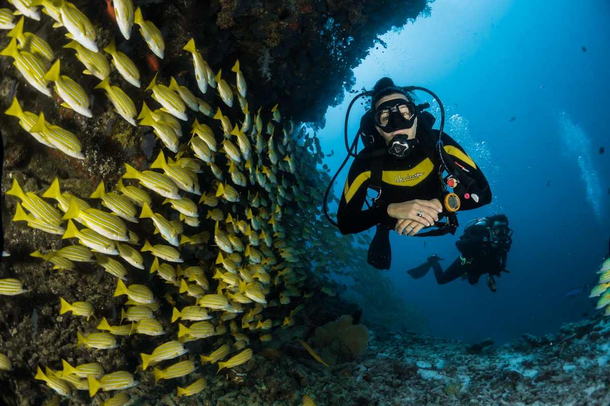
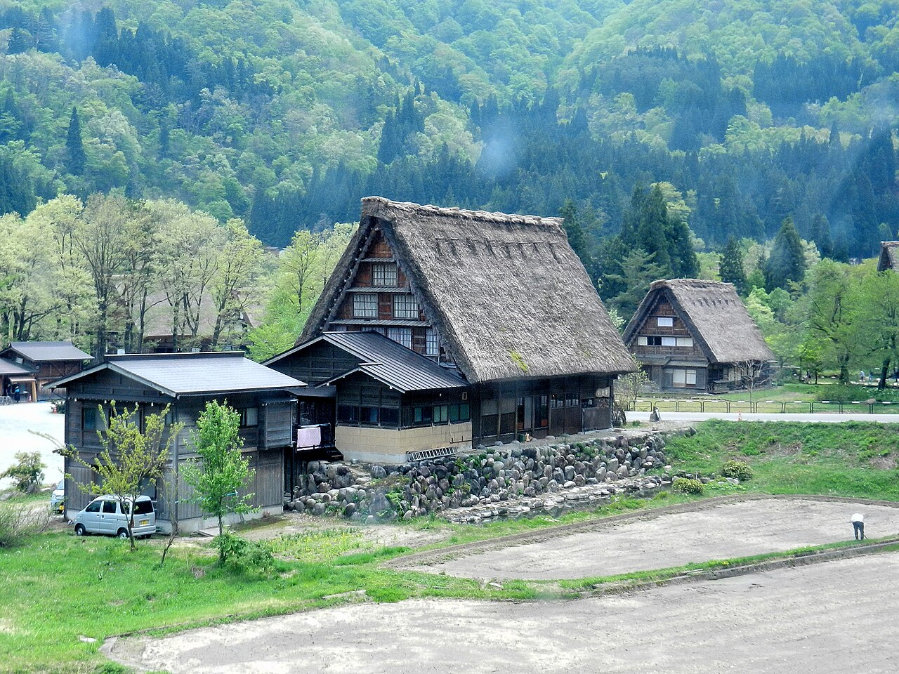
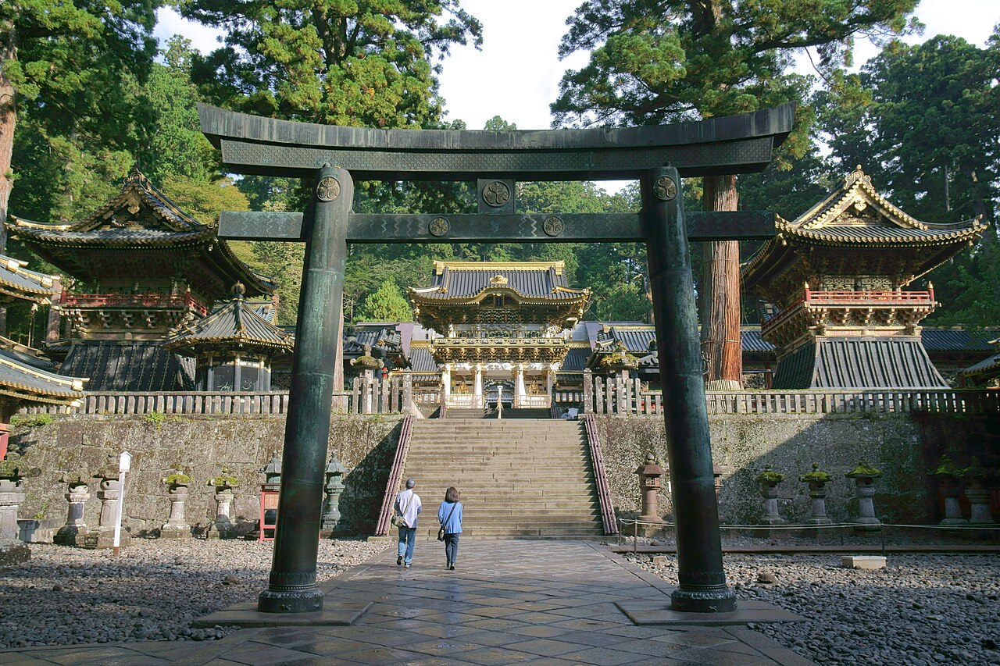
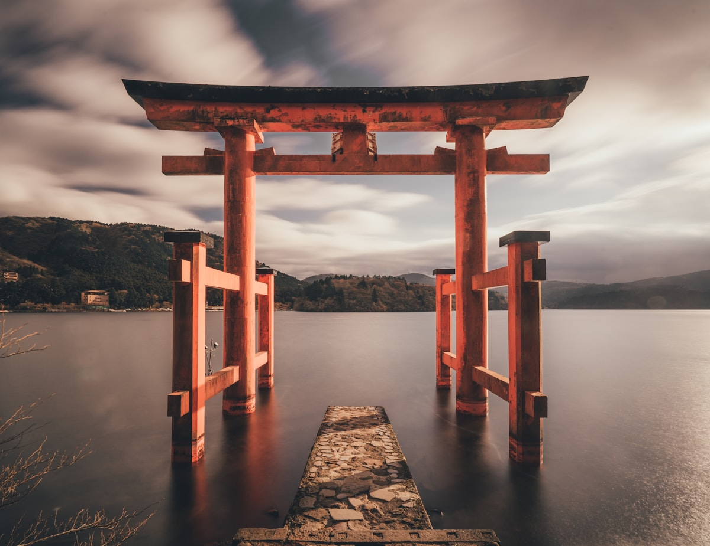

「なぜ有名か」「誰に向いているか」を解説。似た温泉地の比較も。
1月〜12月、季節ごとのベスト旅先を旅ノアが提案します。
「記念日旅行」「一人旅」「温泉旅行」「グルメ旅」など20種類の目的別に最適な旅先を提案。
北海道の海鮮から鹿児島の黒豚まで。旅行前に知っておきたい25品のご当地グルメを旅ノアが解説。
「行き先が決まっていない」「予算とエリアだけ決まっている」…そんな時こそ旅ノアの出番。具体的な提案をお返しします。

旅ノアが厳選。荷造りから現地まで、旅をグレードアップするアイテムを紹介します。
国内旅行の1〜2泊なら機内持ち込みサイズが最強。荷物受け取り不要でスムーズ。
スマホのナビ・写真撮影で電池を消耗する旅行では大容量が安心。
旅行では1日1万歩以上歩くことも。クッション性の高いインソール付きが◎。
胃薬・頭痛薬・絆創膏を小さいポーチにまとめて持ち歩くと安心。
お土産が増えた時や現地散策に便利。軽量でコンパクトに収納できるものを。
グループ旅行や長期旅行に。複数台でシェアできてデータ無制限なら安心。
※当サイトはアフィリエイト広告を含みます。各商品の最新価格・在庫はリンク先でご確認ください。
楽天・一休・じゃらん・JTB・Relux。旅行タイプ別にどれを使うべきか解説します。